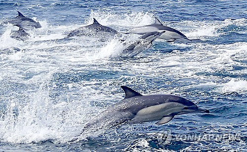
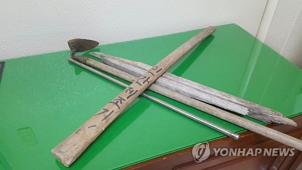

핫뉴스
성당서 여성 피습·재산다툼 방화…연휴 사건사고 '얼룩'
중국서 세계 최고 높이 교량 완공…200층짜리 건물 맞먹어

울산 앞바다서 참돌고래떼 4천 마리 '추석 인사'
IS 성노예에서 탈출한 야지디족 여성, 유엔 친선대사 됐다
모텔서 출산뒤 아기 버리고 달아난 20대 여성 검거

'타이어 노예' 학대도 모자라…기초생활비 가로채
대리가 여직원 성추행… 차장은 묵인, 덩달아 추행
이혼소송 중인 아내 감금·고문한 남편 징역 12년
핫뉴스 전체보기